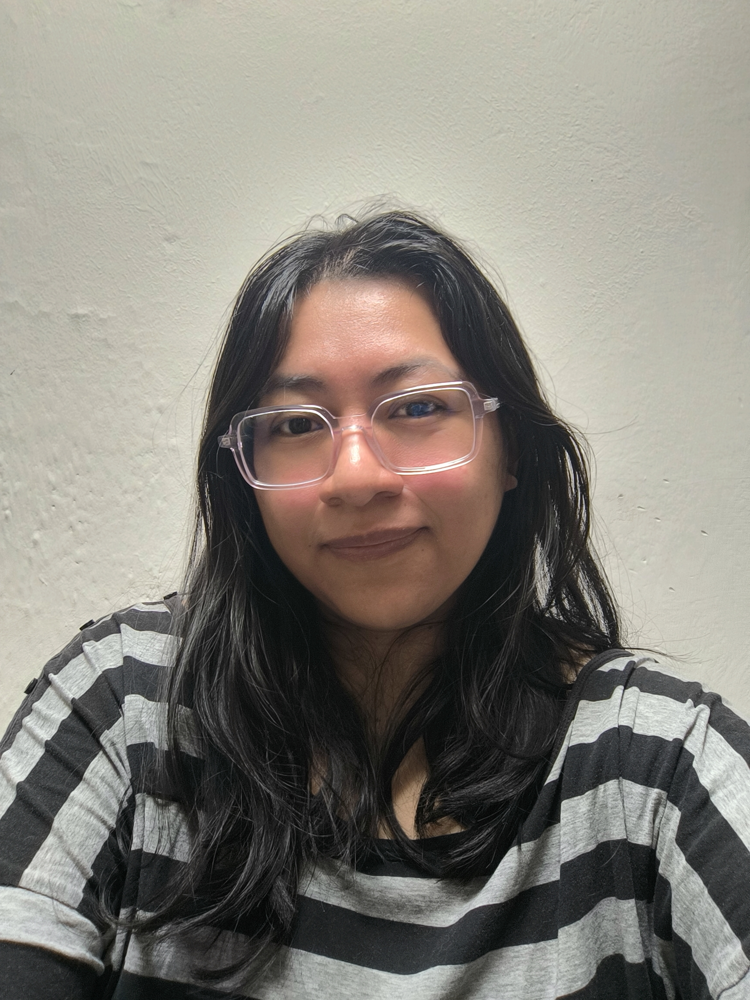

QA Engineer | Control de calidad |Testing manual & automatización | Reporte de Bugs-JIRA | API | Experiencia de usuario
Mucho gusto, soy Lesly. Una QA con dos años de experiencia en el análisis de control de calidad y atención al usuario. Con lo que aseguro la calidad de los productos mediante testing manual y automatizado.
Consolidada en el ciclo de vida del software, detecto bugs y proceso sus tikets usando herramientas como JIRA, realizo el framework automatizado con Python + Selenium. Enfocando la metodología LEAN para optimizar tiempos de entrega y máximizar la experiencia de usuario.
Mi filosofía es simple: "Ningún usuario debe encontrar un error antes que yo". Aporto valor previniendo fallos críticos mediante el uso de pruebas de regresión y creación de edge cases.
Pruebas automatizadas usando Selenium + Python. Automatización para el llenado del campo de texto.
Ver en GitHub →Validación de endpoints y flujos lógicos con Postman y Newman, incluyendo reportes en JIRA.
Ver documentación →Creación de un check list usando los requisitos de la aplicación en Excel, y JIRA para el seguimiento de los reportes de errores .
Ver documentación →Ejercicios para enviar solicitudes usando lenguaje SQL y base de datos remota en consola.
Ver documentación →Pruebas automatizadas usando Selenium + Python, pasando por 2 pantallas y enviando información.
Ver documentación →¡Conóceme mejor en menos de un minuto!
¿Tienes un proyecto en mente o buscas una QA detallista para tu equipo?